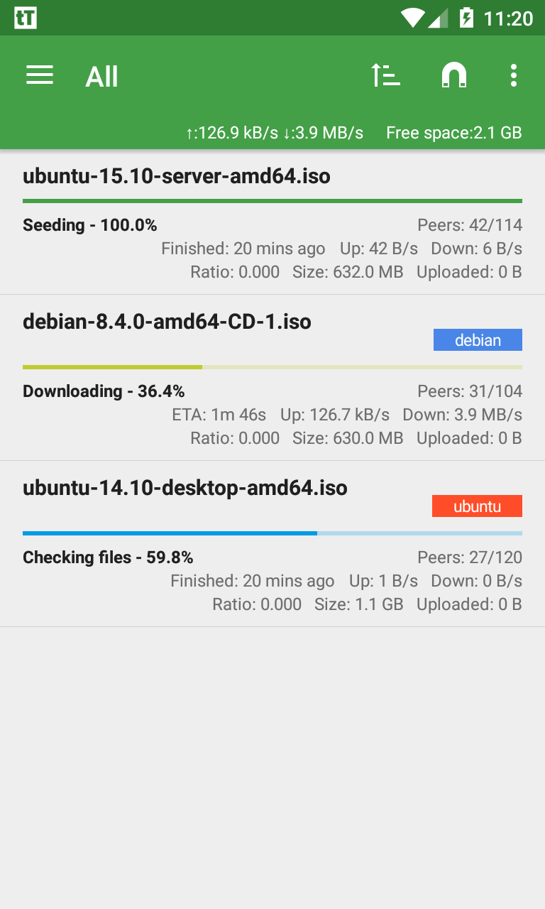
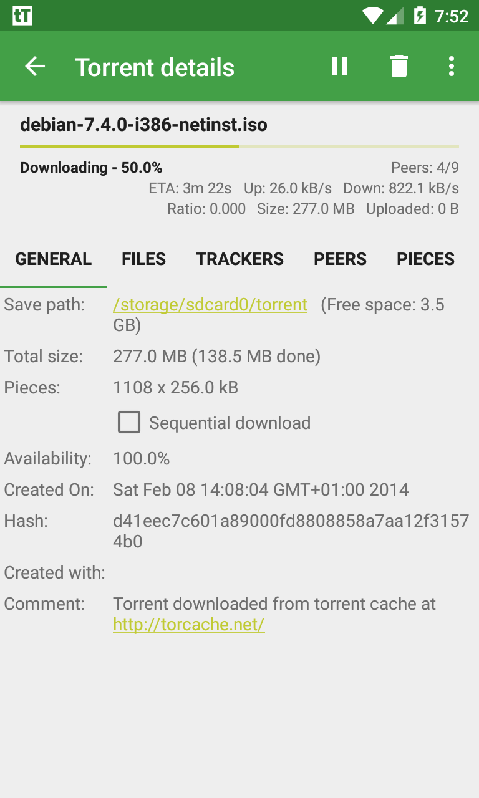

我用 tTorrent 搭了一条每周资源归档的自动化链路
把 tTorrent、手机浏览器和云盘串成一条从种子发现到文件备份的完整管道，告别手动一个个下载复制的旧流程。
以前的痛点：三步重复劳动
每周我都要处理一批公开可分享的大文件资源——纪录片、开源软件镜像、教育资料。以前的流程是：浏览器搜种子 → 点开一个个下载 → 下载完手动把文件从手机拷到电脑 → 再同步到云盘做备份。这一套下来至少两小时，中间还容易漏拷、拷错路径。
最烦的是下载这一步：浏览器里的磁力链接经常被 App 拦截，得手动复制再打开下载器；用手机自带下载的话 BT 协议支持又不好，断了还得重来。试过好几个手机端 BT 客户端，要么广告太多，要么下载速度跟不上 WiFi。
新流程：tTorrent 当核心下载引擎
后来我把这套流程简化成了一条链，tTorrent 就是链上的核心下载引擎。整体思路很直白：种子发现 → 自动唤起下载 → 下载完自动落到云盘同步目录。整个过程中我只需要点一下磁力链接，后面都是自动的。
种子发现：浏览器直达
先说一个关键事实：tTorrent 内置的种子搜索功能已经没了。Google Play 政策调整后，新版把搜索模块下掉了，官方也没再恢复。所以找种子这一步得靠别的工具。
我现在的方案很简单：手机浏览器直接搜。Chrome、Firefox、Edge 都行，找到种子站进去找资源。碰到磁力链接，浏览器会弹出选项让你选 App，tTorrent 会在列表里，点一下直接进去；如果是 .torrent 文件，下载完点一下也会自动唤起。
这套衔接的关键是确保 tTorrent 已经关联上磁力链接和 torrent 文件。进入 App 设置，把相关的文件类型关联勾上，一次设置永久生效。
下载引擎：Lite 版完全够用
tTorrent 有两个版本——Lite 和 Pro。Lite 免费带广告，Pro 付费无广告。但官方明确说明：两个版本除了广告，功能完全一致。RSS、Web 界面、种子创建这些 Pro 版有的功能，Lite 版全都有。
我用的是 Lite 版，Google Play 直接搜 "tTorrent Lite" 就能找到，也可以从tTorrent下载拿 APK 直装，包名是 hu.tagsoft.ttorrent.lite。Play 版有自动更新，比官网直下 APK 省心太多。官网也提供 Lite 版 APK，但那种方式不支持自动更新，得手动盯着换版本。
存储路径：内置存储优先
tTorrent 默认下载到 /sdcard/torrent，也就是手机内置存储。我试过切到外置 SD 卡，但踩了两个坑：一是 SD 卡需要单独授权（Settings → Directories → External storage access），换卡还得重走一遍授权；二是 FAT32 文件系统有 4GB 单文件限制，下大资源容易撞墙。所以后来老老实实回内置存储，空间不够了手动清老文件。
最容易断链的两个环节
这条链条跑下来基本稳定，但有两个环节我踩过坑，值得单独说一下。
环节一：后台下载被系统杀掉
Android 对后台进程管得越来越严。有次锁屏放一边，过俩小时回来一看下载停了。tTorrent 第一次启动时会弹权限请求，其中有「开机自启」和「后台运行」这两个可选权限——我一开始嫌麻烦没开，后来才发现这俩正是保证它后台不被杀的关键。
现在每次装完必开这两个权限。如果还出问题，得去系统设置里把 tTorrent 加入电池优化白名单，华为、小米这类国产 ROM 尤其要注意，它们对后台进程的管控比原生 Android 严格得多。

环节二：换版本后文件找不到了
有次朋友让我试试 Pro 版，我就装了一个。Pro 版包名是 hu.tagsoft.ttorrent.noads，和 Lite 版的 hu.tagsoft.ttorrent.lite 不一样，意味着两个版本的 App 私有数据目录也不同。我以前默认用私有目录存下载文件，换完 Pro 版，旧的下载目录直接找不到了，差点以为文件丢了。
后来把保存路径从私有目录改成了 /sdcard/torrent，公共目录不受包名变化影响，不管换什么版本文件都在那里。关于换版本数据保留和权限授权的更多注意事项，tTorrent文档里有详细说明。这之后就没再出过这种事。

效果与边界
搭好这条链之后，每周处理资源的时间从两小时缩到了四十分钟——主要省在「不用一个个手动复制粘贴」这件事上。下载完文件直接躺在云盘同步目录里，云盘客户端会自动帮我同步到电脑端，我只需要偶尔检查一下有没有失败的种子就行。少了两次手动复制的环节，也不会再有拷错路径、漏拷文件这种低级错误。
但这套流程也有边界。tTorrent 毕竟是手机端下载器，做不了远程管理那种复杂调度。我试过配合 Transdroid 做远程控制，但操作复杂度一下就上去了，适合有远程下载需求的玩家，我这种本地单实例、手动触发出种子的场景用不上。
另外它的 RSS 订阅功能我至今没真正用过。据说可以订阅公开的种子更新源，有新资源自动加入下载队列，但对我来说手动找种子的频率不高，开 RSS 反而会下一堆我不想要的东西，徒占空间。
顺手交个底
现在这套工作流跑了快三个月，基本稳定，没再出过断链的情况。tTorrent 作为下载引擎放在中间位置，上游接浏览器的种子发现，下游接云盘的自动同步，中间不需要我手动干预。手机上唯一要做的事就是：刷到好资源 → 点一下磁力链接 → 锁屏等它跑完。
关于 tTorrent 的版本差异、安装方式、存储设置这些细节，以及我自己整理的一些配置笔记，在 GitHub、Gitee、GitCode 三个仓库都能看到——毕竟开源软件的资料多备份几个地方总是好的，国内朋友用 Gitee 或 GitCode 访问起来也方便。